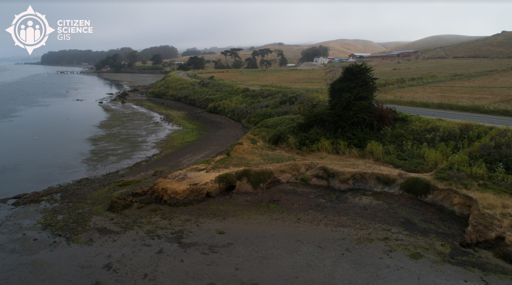

New Teacher Funding For Drones, GIS And Fieldwork From Our NSF Grant
3 minutes read

Teachers are our heroes. You know this. We at Citizen Science GIS often talk about the amazing K-12 teachers we work with and learn from around the globe. Every day, whether in person or remotely, they inspire science's next generation. During this period of social distancing and remote learning, we know even more how valuable teachers are to science and society. To support teachers on Earth Day 2020, we wanted to share a big announcement.
For the past few years, we've been listening to teachers in our workshops and in our education and outreach activities through our Maps, Apps and Drones Tour and GeoBus. One of the most common questions we always receive from teachers is: can you take me with you to your fieldwork sites?
We have maptastic news. We can finally answer with a YES!

Thanks to a new $36,000 U.S. National Science Foundation grant, a small group of U.S. K-12 educators will be able to work with us in funded summer research positions along the U.S. Pacific Coast in California, Oregon, Washington and Alaska in the summer of 2021. Originally we had planned to offer this research experience for teachers, beginning in summer 2020. Due to COVID-19, we are moving the fieldwork experience to summer 2021. Instead, we will start working with our teachers in late fall 2020 to get them ready for the fieldwork experience and take these lessons into their K-12 classrooms. We wanted to announce the opportunity now to show our excitement in working with teachers. Teacher applications will open later this summer.
Teachers will join our Citizen Science GIS team, along with a team of interdisciplinary scholars to drone map eelgrass sites with a NSF grant we have with Smithsonian MarineGEO during summer 2021. In fall 2020 and fall 2021, teachers will also join us for remote learning and lesson/unit development to engage in a series of training modules and learning activities with their students. No experience with drones or GIS is necessary. We will train the teachers in basic techniques they can use in their classrooms.
Selected teachers will be compensated for their work on the grant, they will receive additional technology support (including several drones for their students), conference travel support and school year funding support to incorporate our shared fieldwork and drone training into their K-12 classrooms, and additional funding for the summer 2021 fieldwork.
We're looking forward to 2020-2021 with our K-12 teachers. We salute all the hard work and passion that our teachers are demonstrating as they have transitioned to remote learning with their students across the U.S. We can't wait to have a few teachers join us in this exciting, new Citizen Science GIS at University of Central Florida partnership to inspire science's next generation with DJI Global drones and GIS software, including Esri Drone2Map and ArcGIS Online.